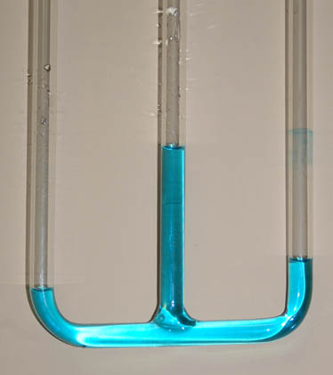
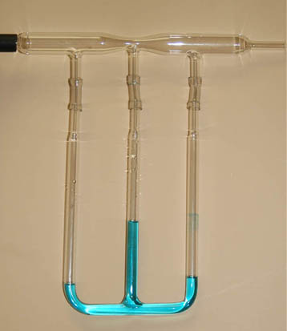

Bernoulli Pressure Lowering
The linear drop in fluid pressure is according to Poiseuille's law, but the constriction produces and extra drop in pressure according to the Bernoulli Principle.
The liquid column height is a measure of the fluid pressure at that point in the flow tube. The vertical tubes act as manometers. The manometers show that the pressure is lowered at the constriction relative to what it would have been in a uniform tube. The pressure that drives the fluid through the tube is the static fluid pressure at the bottom of the reservoir. The resistance to flow represented by the tube causes a drop in pressure as you proceed along the tube.
|  | When a positive pressure is applied to a tube with a constriction, the pressure in the constriction is lowered compared to that in the larger tube. This is demonstrated at left in three vertical tubes that are attached to a glass venturi tube. The middle tube is attached at the constriction. The air pressure tends to push the liquid in the tubes downward, so the higher water level in the center tube indicates that the pressure is lower there.
|
The flow in this system is from left to right, driven by a high pressure air supply. Note that the liquid level in the right hand tube is slightly higher, indicating that the pressure there is slightly less than that at the left hand tube. This is indicative of the normal pressure drop in a flowing fluid since the diameters of the top tube are the same at the left and right tubes. |
 |
|
Index
Bernoulli concepts |